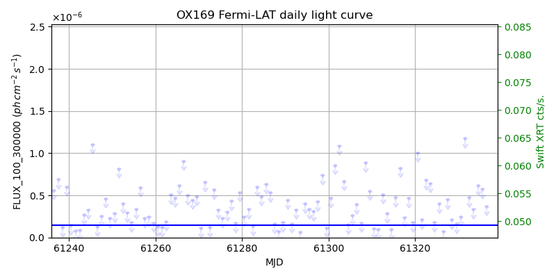
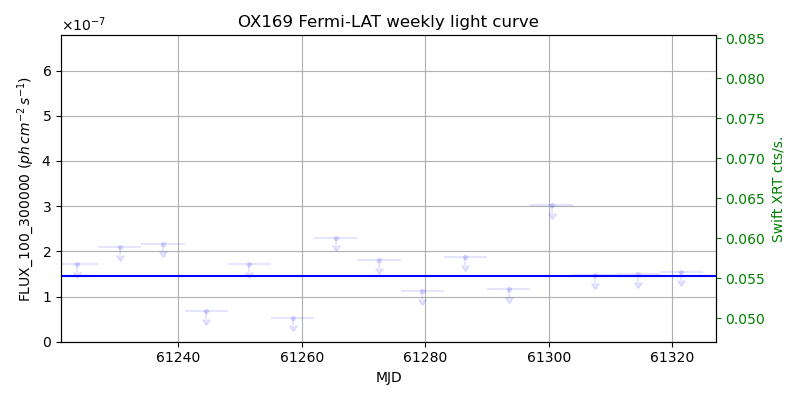
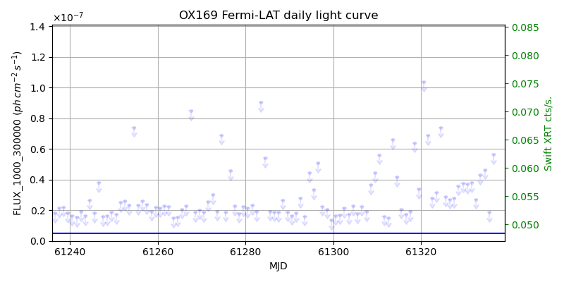
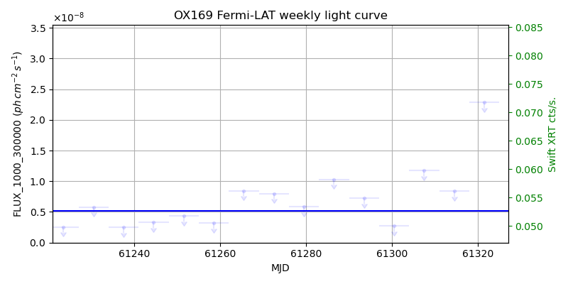

LAT Lightcurve site: https://fermi.gsfc.nasa.gov/ssc/data/access/lat/msl_lc/source/OX_169
NED: Query
Time of last update of this page: UT: 2026-10-30 15:27 (MJD: 61343.644)
| Property | Value |
|---|---|
| R.A. | 21:43:35.52 |
| Dec. | 17:43:48.0 |
| z | 0.211 |
| 3FGL SpectrumType | LogParabola |
| 3FGL PL Index | |
| 3FGL Flux_100_300000 | 1.46e-07 1 / (s cm2) |
| 3FGL Flux_1000_300000 | 5.15e-09 1 / (s cm2) |
| 3FGL Flux >200 GeV | 5.61e-13 1 / (s cm2) |
| 3FGL Extrap. Crab >200 GeV | 0.00 |
| 3FGL Flux After EBL Absorption >200GeV | 3.06e-13 1 / (s cm2) |
| 3FGL EBL Crab Fraction >200GeV | 0.00 |

| MJD | dMJD | Flux | dFlux | Frac3FGL | FracCrab>200GeV | EBLFracCrab>200GeV |
|---|---|---|---|---|---|---|
| 61338.50 | 0.50 | 3.30e-07 | 0.00e+00 | 0.00 | 0.00 | 0.00 |
| 61339.50 | 0.50 | 5.18e-07 | 0.00e+00 | 0.00 | 0.00 | 0.00 |
| 61340.50 | 0.50 | 4.72e-07 | 0.00e+00 | 0.00 | 0.00 | 0.00 |
| 61341.50 | 0.50 | 3.74e-07 | 0.00e+00 | 0.00 | 0.00 | 0.00 |
| 61342.50 | 0.50 | 4.65e-07 | 0.00e+00 | 0.00 | 0.00 | 0.00 |

| MJD | dMJD | Flux | dFlux | Frac3FGL | FracCrab>200GeV | EBLFracCrab>200GeV |
|---|---|---|---|---|---|---|
| 61307.50 | 3.50 | 1.47e-07 | 0.00e+00 | 0.00 | 0.00 | 0.00 |
| 61314.50 | 3.50 | 1.49e-07 | 0.00e+00 | 0.00 | 0.00 | 0.00 |
| 61321.50 | 3.50 | 1.53e-07 | 0.00e+00 | 0.00 | 0.00 | 0.00 |
| 61328.50 | 3.50 | 1.27e-07 | 0.00e+00 | 0.00 | 0.00 | 0.00 |
| 61335.50 | 3.50 | 1.60e-07 | 5.19e-08 | 1.09 | 0.00 | 0.00 |

| MJD | dMJD | Flux | dFlux | Frac3FGL | FracCrab>200GeV | EBLFracCrab>200GeV |
|---|---|---|---|---|---|---|
| 61338.50 | 0.50 | 6.80e-08 | 0.00e+00 | 0.00 | 0.00 | 0.00 |
| 61339.50 | 0.50 | 1.62e-08 | 0.00e+00 | 0.00 | 0.00 | 0.00 |
| 61340.50 | 0.50 | 2.25e-08 | 0.00e+00 | 0.00 | 0.00 | 0.00 |
| 61341.50 | 0.50 | 2.57e-08 | 0.00e+00 | 0.00 | 0.00 | 0.00 |
| 61342.50 | 0.50 | 6.67e-08 | 0.00e+00 | 0.00 | 0.00 | 0.00 |

| MJD | dMJD | Flux | dFlux | Frac3FGL | FracCrab>200GeV | EBLFracCrab>200GeV |
|---|---|---|---|---|---|---|
| 61307.50 | 3.50 | 1.18e-08 | 0.00e+00 | 0.00 | 0.00 | 0.00 |
| 61314.50 | 3.50 | 8.43e-09 | 0.00e+00 | 0.00 | 0.00 | 0.00 |
| 61321.50 | 3.50 | 2.29e-08 | 0.00e+00 | 0.00 | 0.00 | 0.00 |
| 61328.50 | 3.50 | 4.46e-09 | 0.00e+00 | 0.00 | 0.00 | 0.00 |
| 61335.50 | 3.50 | 1.78e-08 | 0.00e+00 | 0.00 | 0.00 | 0.00 |
--------------------------------------------------------- Using user-supplied coords: 21:43:35.52 17:43:48.0 2000 --------------------------------------------------------- FLWO UT night of: 2026-10-31 Local Sid. @ Midnight: 02:14 Sunset (-15.0) (local, UT): 18:44 01:44 Sunrise (-15.0) (local, UT): 05:31 12:31 Moonrise (local, UT): 21:49 04:49 Moonset (local, UT): Moon phase: 0.68 --------------------------------------------------------- AzTime LSID UT Obj_el Obj_az Mn_el Mn_az Sep. --------------------------------------------------------- 18:44 20:57 01:44 72.6 139.6 -27.0 28.6 122.0 19:14 21:27 02:14 75.7 163.4 -23.9 34.8 122.2 19:44 21:57 02:44 75.9 192.8 -20.2 40.4 122.5 20:14 22:27 03:14 73.1 217.7 -16.1 45.6 122.8 20:44 22:58 03:44 68.5 234.5 -11.6 50.4 123.1 21:14 23:28 04:14 62.9 245.5 -6.7 54.8 123.3 21:44 23:58 04:44 56.9 253.3 -0.9 58.8 123.6 22:14 00:28 05:14 50.7 259.4 3.8 62.5 123.8 22:44 00:58 05:44 44.4 264.3 9.2 66.0 124.0 23:14 01:28 06:14 38.0 268.6 14.8 69.3 124.2 23:44 01:58 06:44 31.6 272.5 20.6 72.5 124.4 00:14 02:28 07:14 25.2 276.2 26.5 75.5 124.6 00:44 02:58 07:44 18.9 279.8 32.5 78.6 124.8 01:14 03:28 08:14 12.6 283.4 38.5 81.7 125.0 01:44 03:58 08:44 6.5 287.1 44.7 84.9 125.2 02:14 04:28 09:14 0.8 290.9 50.8 88.3 125.3 02:44 04:59 09:44 -5.3 295.0 57.0 92.2 125.5 03:14 05:29 10:14 -11.2 299.3 63.2 97.0 125.7 03:44 05:59 10:44 -16.7 304.1 69.3 103.5 125.8 04:14 06:29 11:14 -21.8 309.4 75.2 113.7 126.0 04:44 06:59 11:44 -26.5 315.3 80.4 133.8 126.2 05:14 07:29 12:14 -30.8 321.9 83.0 177.6 126.3 05:31 07:46 12:31 -32.9 326.0 82.2 206.9 126.4 --------------------------------------------------------- Dark hours >55 deg.: 3.08 srcstart (UT): 2026-10-31 01:44 srcend (UT): 2026-10-31 04:48